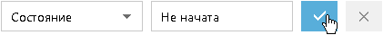
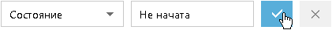
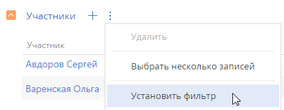
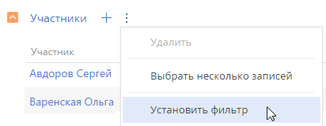
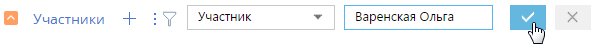
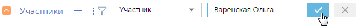
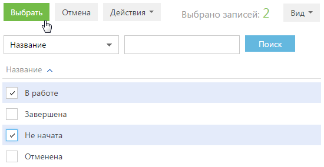
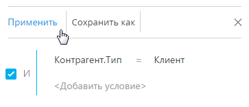
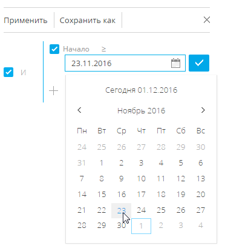
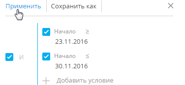

В Creatio реализована возможность фильтровать записи в реестре разделов и деталей. Для поиска и фильтрации записей в разделах предусмотрены следующие инструменты:
-
Быстрый фильтр;
-
Стандартный фильтр;
-
Расширенный фильтр.
Для фильтрации записей на деталях используется только стандартный фильтр.
Элементы управления фильтрами отображаются в верхней части разделов системы (Рис. 1) или непосредственно на деталях.
Управление стандартным и расширенным фильтрами в разделах осуществляется в меню Фильтр. Изменить параметры установленного фильтра в разделе или на детали можно, кликнув по нему и изменив нужные поля в области настройки фильтров.
Настроенные вами фильтры сохраняются при обновлении страницы, переходе между разделами и при повторном входе в систему. Чтобы отменить один из установленных фильтров, нажмите кнопку  в его правой части (Рис. 2).
в его правой части (Рис. 2).
Быстрый фильтр
Быстрый фильтр отображается в некоторых разделах Creatio и используется для фильтрации данных по наиболее часто используемым параметрам (Рис. 3).
Например, быстрый фильтр присутствует в разделе Активности, т.к. чаще всего нужно просматривать активности одного сотрудника за указанный период времени. Быстрые фильтры в разделах по умолчанию активны. При этом набор полей для фильтрации в различных разделах может отличаться.
Быстрый фильтр по периоду
Вы можете использовать фильтры по периоду, например, чтобы отобразить активности за текущую или прошлую неделю.
В системе есть три вида быстрых фильтров по периоду:
-
— отображает записи текущего дня.
-
 — отображает записи текущей недели.
— отображает записи текущей недели. -
— отображает записи стандартного периода, например, “Вчера”, “Текущая неделя”, “Следующая неделя”, “Прошлый месяц” и т. п. Вы также можете установить произвольный период, указав даты его начала и завершения при помощи встроенного календаря.
Для установки произвольного периода фильтрации выберите дату начала и дату завершения периода во встроенном календаре фильтра. Календарь открывается при нажатии на дату начала или завершения периода (Рис. 4).
Быстрый фильтр по ответственному
Фильтр по ответственному используется, чтобы отобразить записи по одному или нескольким ответственным по записям, а в разделе Активности — по участникам. В разделе Активности фильтр называется По сотруднику.
Для просмотра данных по конкретному пользователю выберите его имя в меню фильтра . Для просмотра данных по нескольким ответственным выберите в меню команду Добавить ответственного или Добавить сотрудника и в открывшемся окне укажите необходимого пользователя.
Для отмены фильтрации по ответственным в меню фильтра выберите команду Очистить.
Стандартный фильтр
Стандартный фильтр используется для поиска записей в разделах системы или на деталях по указанным значениям одной или нескольких колонок. Например, если необходимо найти всех контрагентов заданного типа или отобрать активности в заданном состоянии и определенного приоритета.
Установить стандартный фильтр в разделе
-
В меню Фильтр выберите команду Добавить условие (Рис. 6).
- В появившихся полях укажите условие фильтрации. Выберите из списка колонку, по которой необходимо осуществить поиск, и укажите значение колонки (целиком или его фрагмент). Для применения условия фильтрации нажмите кнопку
 (Рис. 7).
Рис. 7 — Применение условия стандартной фильтрации в разделе
(Рис. 7).
Рис. 7 — Применение условия стандартной фильтрации в разделеВ результате в разделе будут отображены только те записи, которые соответствуют примененному фильтру.
Установить несколько стандартных фильтров в разделе
В одном разделе могут быть применены сразу несколько стандартных фильтров. Для этого после установки первого фильтра еще раз выберите команду Добавить условие в меню Фильтр и укажите новое условие фильтрации. После установки нескольких стандартных фильтров в разделе будут отображены только те записи, которые соответствуют всем указанным условиям.
Установить стандартный фильтр на детали
-
В меню кнопки
 выберите команду Установить фильтр (Рис. 8).Рис. 8 — Добавление условия стандартной фильтрации на детали
выберите команду Установить фильтр (Рис. 8).Рис. 8 — Добавление условия стандартной фильтрации на детали -
В появившихся полях укажите условие фильтрации. Выберите из списка колонку, по которой необходимо осуществить поиск, и укажите значение колонки (целиком или его фрагмент). Для применения условия фильтрации нажмите кнопку
 (Рис. 9).Рис. 9 — Применение условия стандартной фильтрации на детали
(Рис. 9).Рис. 9 — Применение условия стандартной фильтрации на детали
В результате на детали будут отображены только те записи, которые соответствуют указанному фильтру.
Установить несколько стандартных фильтров на детали
На одной детали могут быть применены сразу несколько стандартных фильтров. Для этого после установки первого фильтра нажмите кнопку и укажите новое условие фильтрации. После установки нескольких стандартных фильтров на детали будут отображены только те записи, которые соответствуют всем указанным условиям.
Скрыть панель фильтрации на детали
Панель фильтрации на детали скрывается автоматически после обновления страницы. Чтобы скрыть панель вручную, в меню кнопки  выберите действие Скрыть фильтр (Рис. 10).
выберите действие Скрыть фильтр (Рис. 10).
Расширенный фильтр
Если к записям необходимо применить более сложный фильтр, состоящий из нескольких параметров и условий поиска, то используйте расширенный фильтр. Например, при помощи расширенной фильтрации вы можете отобразить в разделе Активности все встречи по новым клиентам.
Для установки расширенного фильтра используется команда Перейти в расширенный режим меню Фильтр (Рис. 11).
Если данные, полученные в результате фильтрации, вы используете регулярно, то создайте по настроенному фильтру динамическую группу, нажав кнопку Сохранить как.
Установить фильтр по колонкам объекта
Вы можете настроить фильтр по колонкам текущего объекта (например, колонка Дата завершения объекта “Активность” или колонка Должность объекта “Контакт”).
Например, чтобы в разделе Активности отобрать незавершенные активности, которые были изменены за последние две недели:
-
Откройте раздел Активности. В меню Фильтр выберите команду Перейти в расширенный режим.
-
В области настройки фильтров нажмите на ссылку <Добавить условие>.
-
В открывшемся окне в поле Колонка выберите интересующую колонку, например, Состояние, и нажмите кнопку Выбрать (Рис. 12).
-
На странице настройки фильтров установите необходимые параметры условия:
-
Выберите тип условия, кликнув по его символу, например, “=”.
-
Нажмите на ссылку <?>. В открывшемся окне отметьте необходимые значения для выбранной колонки, например, “Не начата” и “В работе”. Нажмите кнопку Выбрать (Рис. 13).
Рис. 13 — Выбор значения для колонки
-
-
Повторите предыдущие пункты, чтобы добавить другие необходимые условия. Например, установите пороговые значения для даты изменения записей.
-
Установите логический оператор для заданных условий, например, “И”, кликнув по нему (Рис. 14).
-
Нажмите кнопку Применить.
В результате в разделе Активности будут отображены только незавершенные активности, которые были изменены в течение указанного периода.
Установить фильтр по колонкам связанных объектов
Вы можете отфильтровать записи не только по колонкам текущего объекта, но и по колонкам связанных с ним объектов. Например, для объекта “Активность” можно отфильтровать записи по колонке Тип связанного объекта “Контрагент”. Например, чтобы в разделе Активности отобрать активности только по компаниям определенного типа:
- Откройте раздел Активности. В меню Фильтр выберите команду Перейти в расширенный режим.
- Нажмите на ссылку <Добавить условие>.
- На открывшейся странице выбора колонки:
-
Нажмите кнопку возле наименования объекта.
-
В добавившемся поле выберите связанный объект, например, “Контрагент”.
-
В поле Колонка укажите колонку связанного объекта, например, “Тип”.
-
Нажмите кнопку Выбрать (Рис. 15).
-
-
В области настройки фильтров установите необходимые параметры условия:
-
Выберите тип условия, кликнув по его символу. По умолчанию указано условие “=”.
-
Нажмите на ссылку <?>. В открывшемся окне отметьте необходимое значение для выбранной колонки, например, “Клиент”. Нажмите кнопку Выбрать.
-
-
Нажмите кнопку Применить (Рис. 16).
Рис. 16 — Применение условий фильтрацииВ результате в разделе будут отображены только активности по контрагентам, которые относятся к типу “Клиент”.
Если данные, полученные в результате фильтрации, вы используете регулярно, то создайте по настроенному фильтру динамическую группу, нажав кнопку Сохранить как.
Установить фильтр с группировкой условий фильтрации
Рассмотрим последовательность построения расширенного фильтра, для которого необходимо использовать несколько логических операторов. Например, чтобы в разделе Контрагенты отобразить всех клиентов, для которых или указан город “Москва”, или город не указан:
-
Откройте раздел Контрагенты. В меню Фильтр выберите команду Перейти в расширенный режим.
-
Для установки условия “Тип = Клиент”:
-
Нажмите на ссылку <Добавить условие>.
-
В открывшемся окне выберите колонку контрагента, например, “Тип”. Нажмите кнопку Выбрать.
-
В области настройки фильтров нажмите на ссылку <?>. В открывшемся окне отметьте необходимое значение для выбранной колонки, например, “Клиент”. Нажмите кнопку Выбрать.
-
-
Аналогичным образом добавьте условие “Город = Москва”.
-
Для установки условия “Город не заполнено”:
-
Нажмите на ссылку <Добавить условие>.
-
В открывшемся окне выберите колонку “Город”. Нажмите кнопку Выбрать.
-
В области настройки фильтров кликните по типу условия и в открывшемся списке выберите “Не заполнено”.
-
-
Сгруппируйте необходимые условия и установите для них логический оператор:
-
Удерживая клавишу Ctrl, выделите мышью те условия, которые необходимо сгруппировать для установки другого логического оператора (Рис. 17).
-
В меню кнопки Действия выберите команду Группировать (Рис. 18).
-
Кликнув по заголовку логического оператора, установите основной оператор “И” и оператор для созданной группы — “ИЛИ” (Рис. 19).
-
-
Нажмите кнопку Применить.
В результате в разделе будут отображены контрагенты с типом “Клиент”, для которых в поле Город либо указано “Москва”, либо нет значения.
Установить агрегирующий фильтр
Агрегирующий фильтр позволяет отфильтровать записи одного объекта по связанным с ними записям в объекте с обратной связью. Существует несколько доступных условий фильтрации с использованием агрегирующего фильтра.
-
Количество — для фильтруемых записей существует определенное количество связанных записей в объекте с обратной связью. Например, можно отфильтровать сотрудников, являющихся ответственными по пяти и более контрагентам.
-
Максимум / Минимум — для фильтруемых записей в объекте с обратной связью есть связанные записи с определенным максимальным (минимальным) значением в числовой колонке или в колонке даты. Например, вы можете выбрать сотрудников, последняя задача которых была выполнена на прошлой неделе.
-
Сумма, Среднее — для фильтруемых записей в объекте с обратной связью есть связанные записи с определенной суммой значений или средним значением в числовой колонке. Например, можно отфильтровать сотрудников, у которых средняя продолжительность задач превышает 2 часа.
Процесс построения агрегирующего фильтра аналогичен процессу построения фильтра по колонкам связанных объектов. Например, необходимо получить список пользователей, которые являются ответственными по контрагентам с типом “Клиент”. Такой список можно получить при помощи агрегирующего фильтра:
- Откройте раздел, записи которого необходимо отфильтровать, например, Контакты. В меню Фильтр выберите команду Перейти в расширенный режим.
- Нажмите на ссылку <Добавить условие>.
- В открывшемся окне выбора колонки (Рис. 20):
- Нажмите кнопку
 возле наименования объекта.
возле наименования объекта. - В добавившемся поле выберите объект с обратной связью. Например, чтобы построить агрегирующий фильтр по колонке Ответственный раздела Контрагенты, выберите “Контрагент (по колонке Ответственный)”.
-
В поле Колонка укажите колонку объекта с обратной связью, например, “Количество”.
-
Нажмите кнопку Выбрать.
- Нажмите кнопку
-
В области настройки фильтров (Рис. 21):
-
Укажите условие фильтра, в данном случае, “Количество > 0”.
-
Установите дополнительные параметры фильтра. Например, если необходимо, чтобы отображались только ответственные по контрагентам с типом “Клиент”, добавьте это условие в фильтр.
-
-
Нажмите кнопку Применить.
В результате запись будет отображена в разделе Контакты только в том случае, если существует контрагент, у которого данный пользователь указан в поле Ответственный.
Установить фильтр по периоду
Вы можете настроить фильтрацию записей по определенному периоду или точной дате. Например, отобразить все данные, добавленные в раздел за прошедшую неделю.
В Creatio доступны следующие виды фильтров по периоду:
Настроить фильтр по точной дате
Для отображения данных, относящихся в определенному периоду, укажите интересующий период в условиях фильтра. Например, если необходимо просмотреть активности за период командировки, в которой вы были три недели назад.
- Перейдите в раздел Активности.
- В меню Фильтр выберите команду Перейти в расширенный режим (Рис. 22).
Рис. 22 — Переход в расширенный режим фильтрации
В появившейся области фильтрации укажите начало периода, за который вы хотите отобразить записи в разделе. Для этого:
-
Нажмите на ссылку <Добавить условие> (Рис. 23) и в открывшемся окне выберите необходимую колонку даты, например, “Начало”, чтобы отфильтровать активности по дате их начала.
-
Выберите тип условия напротив добавленной колонки (Рис. 24), например, “≥” (больше или равно), чтобы дата начала периода фильтрации включала этот период.
-
- В меню ссылки <?> выберите команду Указать точную дату (Рис. 25).
- В появившемся поле отобразите при помощи кнопки встроенный календарь фильтра и выберите в нем необходимую дату (Рис. 26).
Рис. 26 — Встроенный календарь фильтра
-
Аналогично укажите конечную дату периода фильтрации:
-
Добавьте в условие фильтрации колонку “Начало”, чтобы отфильтровать активности по дате их начала.
-
Выберите для нее тип условия “≤” (меньше или равно).
-
Выберите дату во встроенном календаре.
-
- Убедитесь, что для добавленных условий фильтрации установлен логический оператор “И”.
- Примените установленный фильтр, используя кнопку Применить фильтра.
Рис. 27 — Применение установленного фильтра
В результате в разделе Активности будут отображены активности, начало которых входит в установленный в фильтре период.
Настроить стандартные периоды фильтрации
Для удобства работы с фильтром используйте стандартные периоды фильтрации. Например, вы можете быстро отобразить записи за предыдущую, текущую или следующую неделю.
Стандартные периоды доступны в меню ссылки <?> условия фильтра (Рис. 28).
Час
Меню содержит команды, позволяющие отображать записи раздела за предыдущий, текущий или следующий час, а также за определенное количество предыдущих или следующих часов. Вы также можете указать в качестве значения фильтра точное время до минуты.
Чтобы указать точное время, выберите команду Точное время и в появившемся поле введите необходимое значение времени в формате Ч:ММ, например, “14:43”. Используйте стандартные значения времени, доступные для выбора в поле.
Чтобы указать количество предыдущих или следующих часов, выберите команду Предыдущих часов или Следующих часов соответственно и в появившемся поле введите необходимое значение. Вы можете ввести только целое число.
Обратите внимание, что предыдущим, текущим или следующим часом считается полный час с первой по 60-ю минуту, например, с 13:00 по 13:59 включительно, а не час относительно текущего момента времени. Например, если текущее время 14:34, то следующим часом будет считаться период с 15:00 по 15:59 включительно, а не с 14:34 по 15:33.
День
Меню содержит команды, позволяющие отображать записи раздела за вчерашний, сегодняшний или завтрашний день, а также за определенное количество предыдущих или следующих дней. Вы также можете указать в качестве значения фильтра определенный день месяца или день недели.
Чтобы указать в качестве значения фильтра определенный день месяца, выберите команду День месяца и в появившейся строке введите число месяца.
Чтобы указать определенный день недели, выберите в меню День —> День недели —> необходимый день недели, например, “Пн”, “Вт”.
Неделя
Меню содержит команды, позволяющие отображать записи раздела за предыдущую, текущую и следующую неделю.
Предыдущей, текущей или следующей неделей считается календарный период с понедельника по воскресенье, а не семидневный период относительно текущего момента времени. Например, если сегодня среда, то следующей неделей будет считаться период с ближайшего понедельника по воскресенье, а не следующие семь дней начиная с текущей даты.
Месяц
Меню содержит команды, позволяющие отображать записи раздела за предыдущий, текущий и следующий месяц. Вы также можете указать в качестве значения фильтра определенный месяц.
Чтобы указать определенный месяц, выберите его в меню Месяц —> Месяц, например, “Декабрь”.
Обратите внимание, что предыдущим, текущим или следующим месяцем считается календарный период. Например, если прошлый месяц — декабрь, то в разделе при применении периода фильтрации “Прошлый месяц” будут отображены записи за период с 1 по 31 декабря.
Квартал
Меню содержит команды, позволяющие отображать записи раздела за предыдущий, текущий и следующий квартал.
Предыдущим, текущим или следующим кварталом считается период в три месяца: I квартал включает в себя первый, второй и третий месяцы года (январь, февраль, март), II квартал — следующие три месяца (апрель, май, июнь) и т. д. Например, если сейчас август, то следующим кварталом будет считаться период, включающий в себя октябрь, ноябрь и декабрь (IV квартал).
Полугодие
Меню содержит команды, позволяющие отображать записи раздела за предыдущее, текущее и следующее полугодие.
Предыдущим, текущим или следующим полугодием считается период в шесть месяцев: I полугодие включает в себя месяцы с января по июнь, II полугодие — с июля по декабрь. Например, если сейчас август (входит во II полугодие), то следующим полугодием будет считаться период с января по июнь следующего года.
Год
Меню содержит команды, позволяющие отображать записи раздела за предыдущий, текущий и следующий год. Вы также можете указать в качестве значения фильтра определенный год.
Предыдущим, текущим или следующим годом считается календарный период. Например, если сейчас август 2020 года, то следующим годом будет считаться период с января по декабрь 2021 года включительно, а не следующие двенадцать месяцев начиная с августа 2020 года.
Настроить фильтр по ежегодным событиям
В отличие от стандартных периодов фильтрации, фильтр по ежегодным событиям учитывает только день и месяц дат, по которым производится отбор. Такой фильтр удобно использовать, например, для отслеживания знаменательных событий контактов.
Фильтр по ежегодным событиям доступен в меню ссылки <?> условия фильтра (Рис. 29).
Меню содержит команды, позволяющие отображать записи раздела за день, а также за определенное количество предыдущих или следующих дней.
-
Ежегодно, сегодня. Условие позволяет отобразить список записей, дата которых совпадает с текущей, без учета года.
-
Ежегодно, через дней <?>. Условие позволяет отобразить список записей, дата которых, без учета года, наступит через указанное количество дней.
-
Ежегодно, следующих дней <?>. Условие позволяет отобразить список записей, дата которых, без учета года, попадает в один из нескольких следующих дней.
-
Ежегодно, предыдущих дней <?>. Условие позволяет отобразить список записей, дата которых, без учета года, попадает в один из нескольких предыдущих дней.